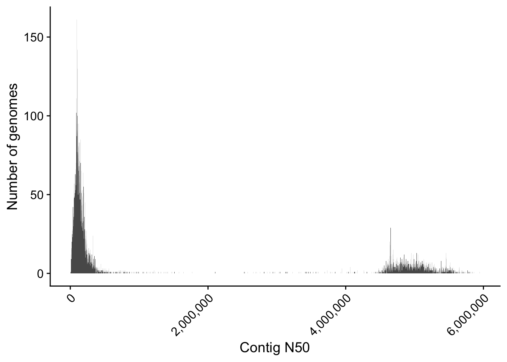

Code
library(tidyverse)
library(readr)
library(readxl)
library(cowplot)
library(viridis)
theme_set(theme_cowplot(14))The partition of the existing bacteria into biological units have been debated over time, leaving us with a working framework where bacterial species can be divided based based on their genetic content. However, bacterial species are non-stationary groups that are in constant evolution, dynamically gaining and losing genetic material while keeping a core of functions unchanged even across large geographical distances. Moreover, the functional content of a given pair of strains can largely differ due to their evolutionary history, meaning that they can have distinct ways to operate with their environment. Besides, the functional characterization of these strains remains an open challenge due to their, sometimes, extremely large diversity and lack of experimental validation. This project is meant to explore the functional landscape of the Escharichia coli pangenome, one of the most sequenced bacterial species at this moment.
library(tidyverse)
library(readr)
library(readxl)
library(cowplot)
library(viridis)
theme_set(theme_cowplot(14))Strain information has been downloaded from the BV-BRC database (https://www.bv-brc.org/), by allowing good quality genomes complete or WGS. Looking at the general distribution of contigs per genome, we can see that we have a high peak at 10 or less contigs, and then a bell shape for the rest with a long tail, reaching to a max count of 999 contigs.
metadata = read_xlsx('BVBRC_genome.xlsx')
contig_bins = seq(0, 1000, 10)
metadata %>%
mutate(bins = cut(contigs,
breaks = contig_bins)) %>%
ggplot(aes(contigs, fill = bins)) +
geom_histogram(binwidth = 5, show.legend = F) +
scale_fill_viridis(discrete = T) +
geom_vline(xintercept = 10) +
theme_cowplot(14)
We need to filter the bad quality genomes from the cohort, which we can start doing by filtering out by checkM metricsL:
checkM completeness: the value that is usually applied ranges from 70%, but I’ll be using a more strict value of 90% because I want to have full genomes when possible.
checkM contamination: I am applying a value of 5% max contamination to avoid getting false information.
However, as we can also see in the next tables, we still lack quite a lot of information from checkM from the metadata.
For example, focusing on the checkM completeness, we would discard 48 strains, but we still lack information from 13303 strains. And focusing on the checkM contamination, we would discard 414 but we also lack information from 22141 strains.
metadata %>%
drop_na(assembly) %>%
mutate(checkM_completeness_class =
case_when(is.na(checkM_completeness) ~ 'NA',
checkM_completeness < 90 ~ "< 90%",
checkM_completeness >= 90 ~ ">= 90%")) %>%
count(checkM_completeness_class) %>% print# A tibble: 3 × 2
checkM_completeness_class n
<chr> <int>
1 < 90% 7
2 >= 90% 12318
3 NA 10813metadata %>%
drop_na(assembly) %>%
mutate(checkM_contamination_class =
case_when(is.na(checkM_contamination) ~ 'NA',
checkM_contamination > 5 ~ "> 5%",
checkM_contamination <= 5 ~ "<= 5%")) %>%
count(checkM_contamination_class) %>% print# A tibble: 3 × 2
checkM_contamination_class n
<chr> <int>
1 <= 5% 6152
2 > 5% 292
3 NA 16694The solution here is easy, I have to download every strain from the metadata and run checkM on them to evaluate their completeness and contamination stats.
But, there is also another problem with this dataset, we lack the assembly name from ~8K genomes. First of all, I will try to get the assembly names from the bioprojects in the metadata, and then I will download the genomes.